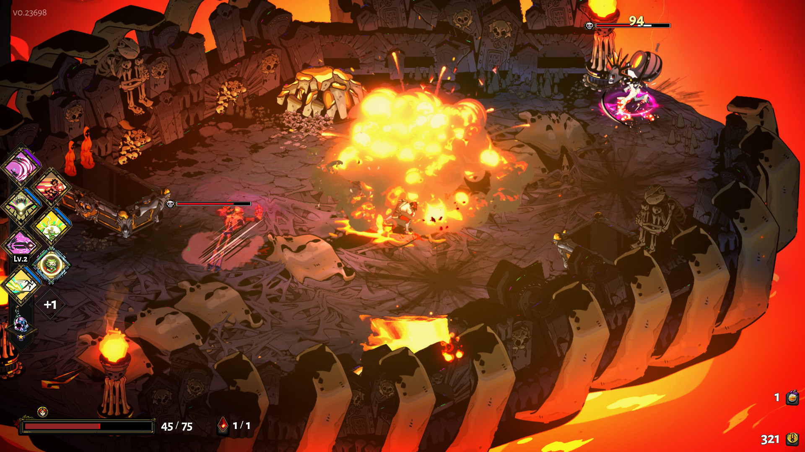
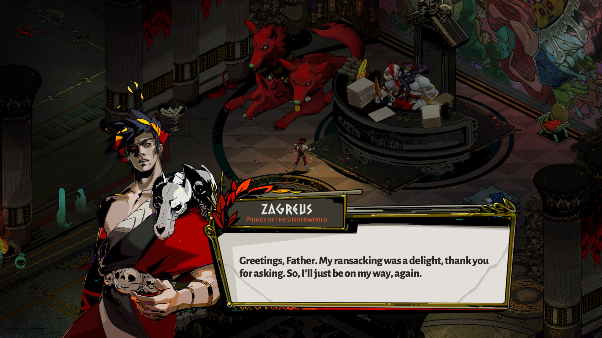
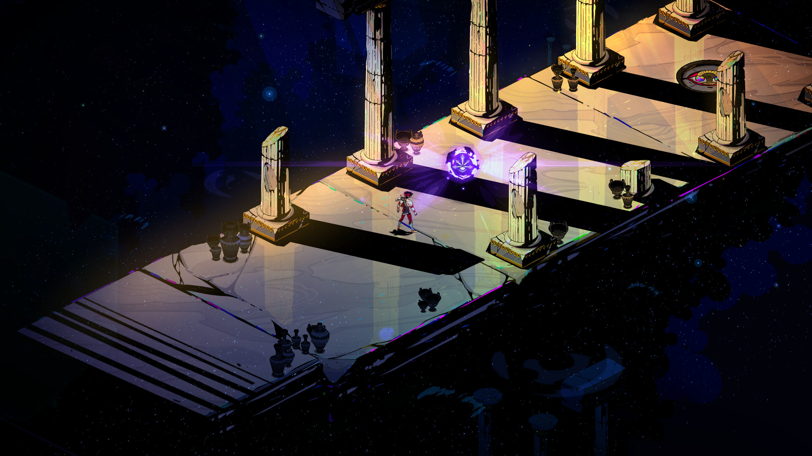
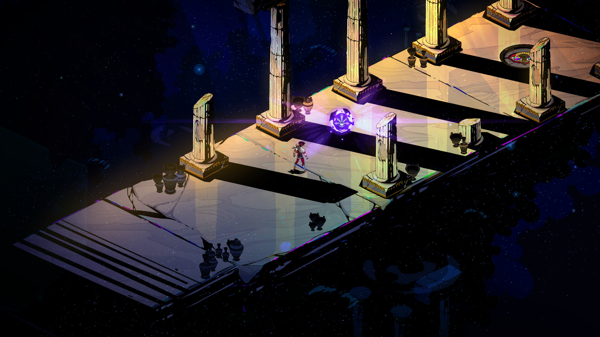
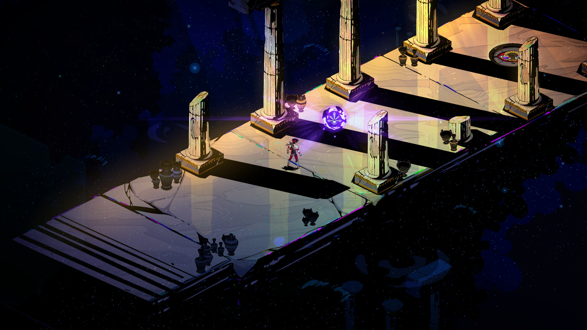

Hades
Defy the god of the dead as you hack and slash out of the Underworld in this rogue-like dungeon crawler from the creators of Bastion, Transistor, and Pyre.
Rating: *****
Single player
Genre: Actie, Indie, RPG Ontwikkelaar: Supergiant Games Uitgavedatum: 17 sep 2020


 


Systeemeisen
- Besturingssysteem: Windows 7 SP1
- Processor: Dual Core 2.4 GHz
- Geheugen: 4 GB RAM
- Grafische kaart: 1GB VRAM / DirectX 10+ support
- Opslagruimte: 15 GB beschikbare ruimte
recenties
- “Hades is a one-of-a-kind rogue-lite that does a brilliant job of marrying its fast-paced action with its persistent, progressing story through a vividly reimagined Greek mythological underworld.”
- - IGN
- “Hades is one of the best roguelites of all-time.”
- - TheSixthAxis
- “It's hard to imagine anyone other than Supergiant pulling off this Herculean feat with such style.”
- - Destructoid